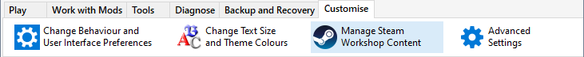
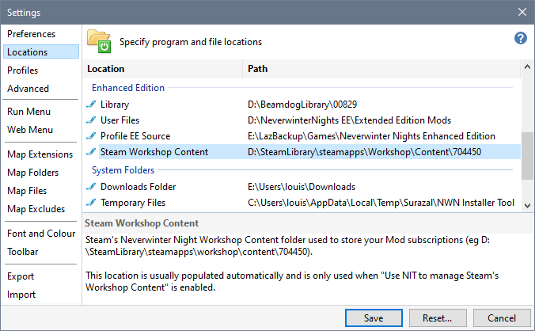
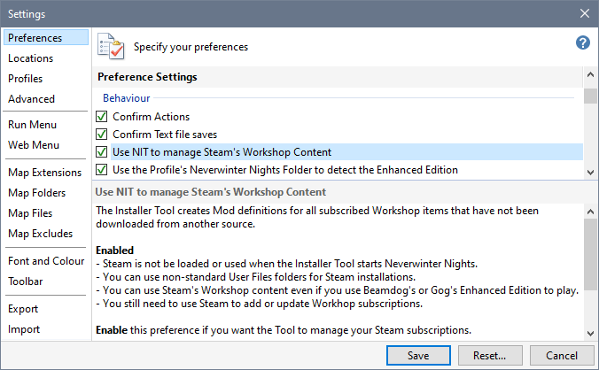

By default, the Installer Tool does not manage Steam's Workshop Subscription content. You can click Manage Steam Workshop Content on the ribbon's Customise tab to enable the Tool's management capabilities.

Use this procedure if the Manage Steam Workshop Content button is not visible because the Steam Workshop Content folder has not been detected.


If you have specified Steam's Library folder on the Locations page in Advanced Settings, the Installer Tool starts Neverwinter Nights directly from Steam's Library rather than using a Steam generated shortcut (which is done when Workshop Management is disabled).
Enable Steam Workshop Subscription Management
Detect Steam Workshop Subscriptions
Disable Steam Workshop Subscription Management